자동차정비산업기사 (2015-05-31 기출문제)
1과목: 일반기계공학
1. 강의 열처리 중 담금질의 주목적은?
- 균열 방지
- 재질의 경화
- 인성 증가
- 잔류응력 제거
(정답률: 72%)

2. 연강재료를 인장시험할 때, 비례한도 내에서 응력(P)과 변형률(ε)과의 관계는?
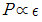
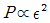
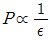
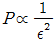
(정답률: 65%)
3. 먼지, 모래 등이 들어가기 쉬운 곳에 가장 적합한 나사는?
- 사각 나사
- 톱니 나사
- 둥근 나사
- 사다리꼴 나사
(정답률: 76%)
4. 그림과 같이 물체 A와 바닥 B의 표면에 수직 하중(P) 150N 이 작용할 때 물체 A를 이동시켜 150N의 마찰력(Q)이 발생한다면 마찰각은?
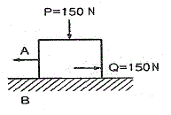
- 15°
- 30°
- 45°
- 90°
(정답률: 63%)
5. 직관 내의 유체 유동에서 마찰에 의한 손실수두와 다른 요인과의 관계를 바르게 설명한 것은?
- 중력가속도가 비례한다.
- 관의 지름에 반비례한다.
- 관의 길이에 반비례한다.
- 유속의 제곱에 반비례한다.
(정답률: 57%)
6. 전동용 기계요소인 기어(gear)에서 두 축이 만나지도 평행하지도 않는 기어가 아닌 것은?
- 베벨 기어(bevel gear)
- 스크류 기어(screw gear)
- 하이포이드 기어(hypoid gear)
- 웜과 웜기어(worm and worm gear)
(정답률: 57%)
7. 벨트 풀리(belt pulley)와 같은 원형모양의 주형 제작에 편리한 주형법은?
- 혼성 주형법
- 회전 주형법
- 조립 주형법
- 고르게 주형법
(정답률: 87%)
8. 베인 펌프(vane pump)의 형식은?
- 원심식
- 왕복식
- 회전식
- 축류식
(정답률: 79%)
9. 연삭숫돌에서 연삭이 진행됨에 따라 입자의 날끝이 자동적으로 닳아 떨어져 커터의 바이트처럼 연삭하지 않아도 되는 현상은?
- 드레싱
- 글레이징
- 트리밍
- 자생작용
(정답률: 73%)
10. 길이 500mm의 봉이 인장하중을 받아 0.5mm만큼 늘어났을 때, 인장변형률은?
- 0.001
- 0.01
- 100
- 1000
(정답률: 66%)
11. 칠드주철에 관한 설명으로 옳지 않은 것은?
- 칠드층을 만들기 위해 Si가 많은 재료를 사용한다.
- 압연용 롤러와 기차의 바퀴 등에 사용되며 내마모성이 큰 주물이다.
- 백선화된 부분은 시멘타이트가 형성되어 강도가 크고 취성이 있다.
- 내부는 인성이 있는 회주철로서 취약하지 않아 잘 파손되지 않는다.
(정답률: 59%)
12. 아크용접작업에서 용접 결함과 가장 거리가 먼 것은?
- 운봉속도
- 아크의 길이
- 전류의 세기
- 용접봉심선의 굵기
(정답률: 70%)
13. 비틀림 모멘트를 받는 원형단면 축에 발생되는 최대 전단응력은?
- 축 지름이 증가하면 최대전단응력은 감소한다.
- 단면계수가 감소하면 최대전단응력은 감소한다.
- 축의 단면적이 증가하면 최대전단응력은 증가한다.
- 가해지는 토크가 증가하면 최대전단응력은 감소한다.
(정답률: 43%)
14. 판금 가공(sheet metal working)의 종류에 해당되지 않는 것은?
- 접합 가공
- 단조 가공
- 성형 가공
- 전단 가공
(정답률: 63%)
15. 지름이 4mm인 강선이 그림과 같이 반지름이 500mm인 원통 위에서 휘어져 있을 때 최대굽힘 응력은 몇 kgf/cm2 인가? (단, E=2.0×106kgf/cm2 이다)
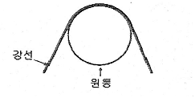
- 796.8
- 1593.6
- 7968
- 15936
(정답률: 44%)
16. 그림과 같은 마이크로미터의 측정값은?
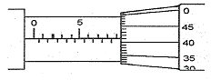
- 5.41mm
- 5.91mm
- 9.41mm
- 9.91mm
(정답률: 80%)
17. 원심펌프에서 케이싱(casing)을 스파이럴(spiral)로 만드는 가장 중요한 이유는?
- 손실을 적게 하기 위하여
- 축추력을 방지하기 위하여
- 축을 모터와 직결하기 위하여
- 공동현상(cavitation)을 적게 하기 위하여
(정답률: 58%)
18. 보이 길이 300mm, 지름 50mm인 원형 단면의 외팔보가 있다. 이 보에 생기는 최대 처짐을 0.2mm이하로 제한한다면 보의 자유단에 작용시킬 수 있는 집중하중은 최대 약 몇 Pa 인가?(오류 신고가 접수된 문제입니다. 반드시 정답과 해설을 확인하시기 바랍니다.)
- 1400
- 1500
- 1600
- 1700
(정답률: 29%)
19. 비금속재료 중 하나인 합성수지의 일반적인 특징으로 틀린 것은?
- 열에 약하다.
- 전기전도성이 좋다.
- 가공성이 좋고 성향이 간단하다.
- 투명한 것이 많고 착색이 용이하다.
(정답률: 79%)
20. 키가 사용되지 않은 곳은?
- 기어
- 커플링
- 체인
- 벨트풀리
(정답률: 62%)
2과목: 자동차엔진
21. 기관의 윤활유 소비 증대에 가장 영향을 주는 것은?
- 새 여과기의 사용
- 기관의 장시간 운전
- 실린더와 피스톤링의 마멸
- 타이밍 체인 텐셔너의 마모
(정답률: 86%)
22. 전자제어 디젤 연료분사 방식 중 다단분사에 대한 설명으로 가장 적합한 것은?
- 후분사는 소음 감소를 목적으로 한다.
- 다단분사는 연료를 분할하여 분사함으로써 연소효율이 좋아지며 PM과 NOx를 동시에 저감시킬 수 있다.
- 분사시기를 늦추면 촉매환원성분인 HC가 감소된다.
- 후분사 시기를 빠르게 하면 배기가스 온도가 하강한다.
(정답률: 82%)
23. LPG 기관의 연료 제어 관련 주요 구성 부품에 속하지 않은 것은?
- 베이퍼라이저
- 긴급 차단 솔레노이드 밸브
- 퍼지컨트롤 솔레노이드 밸브
- 액상 기상 솔레노이드 밸브
(정답률: 69%)
24. 전자제어 디젤연료분사장치(common rail system)에서 예비분사에 대한 설명 중 가장 옳은 것은?
- 예비 분사는 주 분사 이후에 미연가스의 완전 연소와 후처리 장치의 재연소를 위해 이루어지는 분사이다.
- 예비 분사는 인젝터의 노후화에 따른 보정분사를 실시하여 엔진의 출력저하 및 엔진부조를 방지하는 분사이다.
- 예비 분사는 연소실의 연소압력 상승을 부드럽게 하여 소음과 진동을 줄여준다.
- 예비 분사는 디젤엔진의 단점인 시동성을 향상 시키기 위한 분사를 말한다.
(정답률: 73%)
25. TPS(스로틀 포지션 센서)에 관한 사항으로 가장 거리가 먼 것은?
- 스로틀바디의 스로틀 축과 같이 회전하는 가변저항기이다.
- 자동변속기 차량에서는 TPS신호를 이용하여 변속단을 만드는데 사용된다.
- 피에조타입을 많이 사용한다.
- TPS는 공회전 상태에서 기본값으로 조정한다.
(정답률: 76%)
26. 전자제어 가솔린기관에서 연료압력이 높아지는 원인이 아닌 것은?
- 연료리턴 라인의 막힘
- 연료펌프 체크 밸브의 불량
- 연료압력조절기의 진공 불량
- 연료리턴 호스의 막힘
(정답률: 55%)
27. 전자제어 디젤 기관이 주행 후 시동이 꺼지지 않는다. 가능한 원인 중 거리가 가장 먼 것은?
- 엔진 컨트롤 모듈 내부 프로그램 이상
- 엔진 오일 과다 주입
- 터보차저 윤활 회로 고착 또는 마모
- 전자식 EGR컨트롤 밸브 열림 고착
(정답률: 52%)
28. 전자제어 가솔린 분사장치의 기본 분사시간을 결정하는데 필요한 변수는?
- 냉각수 온도와 배터리전압
- 흡입공기량과 엔진 회전속도
- 크랭크 각과 스로틀 밸브의 열린 각
- 흡입공기의 온도와 대기압
(정답률: 73%)
29. 등온, 정압, 정적, 단열과정을 P-V 선도에 아래와 같이 도시 하였다. 이 중에서 단열과정의 곡선은?
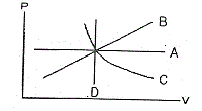
- A
- B
- C
- D
(정답률: 79%)
30. 오토사이클의 압축비가 8.5일 경우 이론 열효율은? (단, 공기의 비열비는 1.4이다.)
- 57.5%
- 49.6%
- 52.4%
- 54.6%
(정답률: 52%)
31. 밸브의 서징(surging) 현상 방지대책으로 틀린 것은?
- 피치가 서로 다른 2중 스프링을 사용한다.
- 밸브 스프링의 고유진동수를 높인다.
- 피치가 일정한 코일을 사용한다.
- 원추형 스프링을 사용한다.
(정답률: 61%)
32. 가솔린 기관에서 인젝터의 연료 분사량에 직접적으로 관계되는 것은?
- 인젝터의 니들 밸브 유효 행정
- 인젝터의 솔레노이드 코일 차단 전류
- 인젝터의 솔레노이드 코일 통전 시간
- 인젝터의 니들 밸브 지름
(정답률: 85%)
33. 기관의 연소속도에 대한설명 중 틀린 것은?
- 공기 과잉율이 크면 클수록 연소 속도는 빨라진다.
- 일반적으로 최대 출력 공연비 영역에서 연소 속도가 가장 빠르다.
- 흡입공기의 온도가 높으면 연소속도는 빨라진다.
- 연소실내의 난류의 강도가 커지면 연소속도는 빨라진다.
(정답률: 51%)
34. 총배기량이 1254 cc 이고, 실린더수가 4인 가솔린 엔진의 압축비가 6.6이다. 이 엔진의 연소실 체적은 약 몇 cc인가?
- 47.5
- 56
- 190
- 313.5
(정답률: 47%)
35. 연료 증발가스를 활성탄에 흡착 저장 후 엔진 웜업 시 흡기 매니폴드로 보내는 부품은?
- 차콜 캐니스터
- 플로트 챔버
- PCV 장치
- 삼원촉매장치
(정답률: 80%)
36. OBD-2 시스템 차량의 엔진 경고등 점등 관련 두 정비사의 의견 중 맞은 것은?
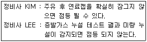
- 정비사 KIM만 옳다.
- 정비사 LEE만 옳다.
- 두 정비사 모두 틀리다.
- 두 정비사 모두 옳다.
(정답률: 76%)
37. 다음은 배출가스 정밀검사에 관한 내용이다. 정밀검사모드로 맞는 것을 모두 고른 것은?
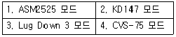
- 1,2
- 1,2,3
- 1,3,4
- 2,3,4
(정답률: 67%)
38. LPI차량이 시동이 걸리지 않는다. 다음의 원인중 거리가 가장 먼 것은? (단, 크랭킹은 가능하다.)
- 연료차단 솔레노이드 밸브 불량
- key-off시 인젝터에서 연료 누유
- 연료 필터 막힘
- 인히비터 스위치 불량
(정답률: 71%)
39. 자동차 및 자동차부품의 성능과 기준에 관한 규칙 중 자동차의 연료탱크, 주입구 및 가스배출구의 적합 기준으로 옳지 않은 것은?
- 배기관의 끝으로부터 20㎝ 이상 떨어져 있을 것 (연료탱크를 제외한다.)
- 차실안에 설치하지 아니하여야 하며, 연료탱크는 차실과 벽 또는 보호판 등으로 격리되는 구조일 것
- 노출된 전기단자 및 전기개페로부터 20㎝ 이상 떨어져 있을 것 (연료탱크를 제외한다.)
- 연료장치는 자동차의 움직임에 의하여 연료가 새지 아니하는 구조일 것
(정답률: 64%)
40. 전자제어 가솔린 기관에서 티타니아 산소센서의 출력전압이 약 4.3 ~ 4.7 V로 높으면 인젝터의 분사시간은?
- 길어진다.
- 짧아진다.
- 짧아졌다 길어진다.
- 길어졌다 짧아진다.
(정답률: 60%)
3과목: 자동차섀시
41. 조향장치에서 조향휠의 유격이 커지고 소음이 발생할 수 있는 원인으로 거리가 가장 먼 것은?
- 요크플러크의 풀림
- 스티어링 기어박스 장착 볼트의 풀림
- 타이로드 엔드 조임 부분의 마모 및 풀림
- 등속조인트의 불량
(정답률: 70%)
42. FR 방식의 자동차가 주행 중 디퍼렌셜장치에서 많은 열이 발생한다면 고장원인으로 거리가 가장 먼 것은?
- 추진축의 밸런스웨이트 이탈
- 기어의 백래시 과소
- 프리로드 과소
- 오일 량 부족
(정답률: 63%)
43. 자동변속기에서 급히 가속페달을 밟았을 때, 일정속도 범위 내에서 한단 낮은 단으로 강제 변속이 되도록 하는 장치는?
- 킥 다운 스위치
- 스로틀 밸브
- 거버너 밸브
- 매뉴얼 밸브
(정답률: 89%)
44. 자동차의 구동력을 크게 하기 위해서는 구동바퀴의 회전토크 T와 반경 R을 어떻게 해야 하는가?
- T와 R 모두 크게 한다.
- T는 크게, R은 작게 한다.
- T는 작게, R은 크게 한다.
- T와 R 모두 작게 한다.
(정답률: 79%)
45. 앞차축의 구조 형식이 아닌 것은?
- 역 엘리옷형
- 엘리옷형
- 마아몬형
- 역 마아몬형
(정답률: 74%)
46. 변속기에서 싱크로메시 기구가 작동하는 시기는?
- 변속기어가 물릴 때
- 변속기어가 풀릴 때
- 클러치 페달을 놓을 때
- 클러치 페달을 밟을 때
(정답률: 85%)
47. 전자제어 제동장치의 목적이 아닌 것은?
- 미끄러운 노면에서 전자제어에 의해 제동거리를 단축한다.
- 앞바퀴의 잠김을 방지하여 조향 능력이 상실되는 것을 방지한다.
- 후륜을 조기에 고착시켜 옆 방향 미끄러짐을 방지한다.
- 제동시 미끄러짐을 방지하여 차체의 안전성을 유지한다.
(정답률: 76%)
48. 동력조향장치의 종류 중 파워 실린더를 스티어링 기어박스 내부에 설치한 형식은?
- 링키지 형
- 인티그럴 형
- 콤바인드 형
- 세퍼레이터 형
(정답률: 65%)
49. 싱글 피니언 유성기어 장치를 사용하는 오버 드라이브 장치에서 링기어를 회전시키면 유성기어 캐리어는 어떤 상태가 되는가?
- 회전수는 링기어 보다 느리게 된다.
- 링기어와 함께 일체로 회전하게 된다.
- 반대 방향으로 링기어 사이에 고정된다.
- 캐리어는 선기어와 링기어 사이에 고정된다.
(정답률: 60%)
50. 자동차의 변속기에서 제3속의 감속비 1.5, 종감속 구동 피니언 기어의 잇수 5, 링기어의 잇수 22, 구동바퀴의 타이어 유효반경 280mm, 엔진회전수 3300rpm으로 직진 주행하고 있다. 이 자동차의 주행속도는? (단, 타이어의 미끄러짐은 무시한다.)
- 약 26.4km/h
- 약 52.8km/h
- 약 116.2km/h
- 약 128.4km/h
(정답률: 54%)
51. 승용차용 타이어의 표기법으로 잘못된 것은?
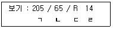
- ㄱ : 단면폭(2⑤mm)
- ㄴ : 편평비(65%)
- ㄷ : 래이디얼(R)구조
- ㄹ : 림외경(14mm)
(정답률: 84%)
52. 전자제어 서스펜션(ECS)시스템의 제어기능이 아닌 것은?
- 안티 피칭 제어
- 안티 다이브 제어
- 차속 감응 제어
- 안티 요잉 제어
(정답률: 52%)
53. 기관 정지 중에도 정상 작동이 가능한 제동장치는?
- 기계식 주차 브레이크
- 와전류 리타더 브레이크
- 배력식 주 브레이크
- 공기식 주 브레이크
(정답률: 84%)
54. 훅 조인트라고도 하며 구조가 단단하고 작동이 확실하며, 큰 동력을 전달할 수 있는 자재이음의 형식은?
- 등속 조인트
- 십자형 조인트
- 트러니언 조인트
- 플렉시블 조인트
(정답률: 62%)
55. 선회 주행 중 뒷바퀴에 발생되는 코너링 포스가 크게 되어 회전 반경이 점점 커지는 현상은?
- 안티 록 현상
- 트램핑 현상
- 언더 스티어링 현상
- 오버 스티어링 현상
(정답률: 65%)
56. TCS(traction control system)의 특징과 가장 거리가 먼 것은?
- 구동 슬립(slip)율 제어
- 변속 유압 제어
- 트레이스(trace) 제어
- 선회 안정성 향상
(정답률: 69%)
57. ABS(Anti-lock Brake System)시스템에 대한 두 정비사의 의견 중 옳은 것은?
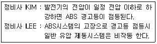
- 정비사 KIM만 옳다.
- 정비사 LEE만 옳다.
- 두 정비사 모두 틀리다.
- 두 정비사 모두 옳다.
(정답률: 73%)
58. 전자제어 현가장치의 자세제어 중 안티 스쿼트 제어의 주요 입력신호는?
- 조향 휠 각도 센서, 차속 센서
- 스로틀 포지션 센서, 차속 센서
- 브레이크 스위치, G-센서
- 차고 센서, G-센서
(정답률: 63%)
59. 토크컨버터에 대한 설명 중 틀린 것은?
- 속도비율이 1일 때 회전력 변환비율이 가장 크다.
- 스테이터가 공전을 시작할 때까지 회전력 변환비율은 감소한다.
- 클러치점(clutch point)이상의 속도비율에서 회전력 변환비율은 1 이 된다.
- 유체충돌의 손실은 속도비율이 0.6~0.7일 때 가장 작다.
(정답률: 49%)
60. 마스터 실린더의 단면적이 10 cm2 인 자동차가 있다. 20 N의 힘으로 브레이크 페달을 밟았을 경우 휠 실린더의 단면적이 20 cm2 라고 하면 이 때의 휠 실린더에 작용되는 힘은?
- 20 N
- 30 N
- 40 N
- 50 N
(정답률: 72%)
4과목: 자동차전기
61. 통합 운전석 기억장치는 운전석 시트, 아웃사이드 미러, 조향 휠, 룸미러 등의 위치를 설정하여 기억된 위치로 재생하는 편의 장치다. 재생 금지 조건이 아닌 것은?
- 점화스위치가 OFF되어 있을 때
- 변속레버가 위치 "P"에 있을 때
- 차속이 일정속도(예, 3km/h 이상) 이상일 때
- 시트 관련 수동 스위치의 조작이 있을 때
(정답률: 74%)
62. 점화 2차 파형 회로 점검에서 감쇠 진동 구간이 없을 경우 고장 원인으로 가장 적합한 것은?
- 점화코일의 극성이 바뀜
- 스파크 플러그의 오일 및 카본 퇴적
- 점화 케이블의 절연 상태 불량
- 점화 코일의 단선
(정답률: 65%)
63. 계기판의 방향지시등 램프 확인결과 좌우 점멸 횟수가 다른 원인이 아닌 것은?
- 플래셔 유닛의 접지가 단선되었다.
- 전구의 용량이 서로 다르다.
- 전구 하나가 단선되었다.
- 플래서 유닛과 한쪽 방향지시등 사이에 회로가 단선되었다.
(정답률: 67%)
64. 하이브리드자동차의 전원 제어 시스템에 대한 두 정비사의 의견 중 옳은 것은?
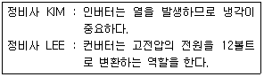
- 정비사 KIM만 옳다.
- 정비사 LEE만 옳다.
- 두 정비사 모두 틀리다.
- 두 정비사 모두 옳다.
(정답률: 65%)
65. 자동차의 에어컨에서 냉방효과가 저하되는 원인이 아닌 것은?
- 냉매량이 규정보다 부족할 때
- 압축기 작동시간이 짧을 때
- 실내공기순환이 내기로 되어 있을 때
- 냉매주입시 공기가 유입되었을 때
(정답률: 79%)
66. 미등 자동소등제어에서 입력요소로서 틀린 것은?
- 점화스위치
- 미등스위치
- 미등릴레이
- 운전석 도어스위치
(정답률: 52%)
67. 냉방장치의 구조 중 다음의 설명에 해당되는 것은?
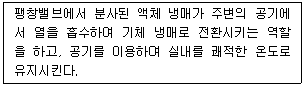
- 리시버 드라이어
- 압축기
- 증발기
- 송풍기
(정답률: 70%)
68. 교류 발전기에서 축전지의 역류를 방지하는 컷아웃 릴레이(역류 방지기)가 없는 이유로 옳은 것은?
- 다이오드가 있기 때문이다.
- 트랜지스터가 있기 때문이다.
- 전압 릴레이가 있기 때문이다.
- 스테이터 코일이 있기 때문이다.
(정답률: 78%)
69. 자동차의 정기검사에서 전기장치의 검사기준으로 맞는 것은?
- 변형·느슨함 및 누유가 없을 것
- 축전지의 접속·절연 및 설치상태가 양호할 것
- 전기배선의 손상이 크지 않고 설치상태가 적당할 것
- 방향지시등, 제동등의 점등 시간이 양호할 것
(정답률: 60%)
70. 자동차 전조등 주광축의 하향진폭은 전방 10m에 있어서 등화 설치높이의 얼마 이내이어야 안전기준에 적합한가?
- 1/5
- 2/5
- 3/10
- 1/10
(정답률: 71%)
71. 그림과 같은 회호의 작동상태를 바르게 설명한 것은?
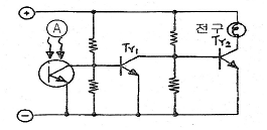
- A에 열을 가하면 전구가 점등한다.
- A가 어두워지면 전구가 점등한다.
- A가 환해지면 전구가 점등한다.
- A에 열을 가하면 전구가 소등한다.
(정답률: 64%)
72. 자동차 점화 1차 파형에 대한 설명으로 틀린 것은?
- 점화코일의 (-)측에 흐르는 전압의 변화 또는 파워 TR 컬렉터의 전압 변화가 점화 1차 파형이다.
- 서지전압이 높으면 화염전파시간이 줄어들고, 서지전압이 낮으면 화염전파시간이 늘어난다.
- 파워릴레이를 통과한 전압은 점화코일을 거쳐 파워 TR 베이스에 대기한다.
- ECU에서 파워 TR 베이스에 공급되는 전류를 차단하면 점화코일에는 서지전압이 발생된다.
(정답률: 54%)
73. 다음은 하이드리브 자동차에서 사용하고 있는 캐패시터(Capacitor)의 특징을 나열한 것이다. 틀린 것은?
- 충전시간이 짧다.
- 출력의 밀도가 낮다.
- 전지와 같이 열화가 거의 없다.
- 단자 전압으로 남아있는 전기량을 알 수 있다.
(정답률: 67%)
74. 다음 직렬회에서 저항 R1에 5mA의 전류가 흐를 때 R1의 저항값은?
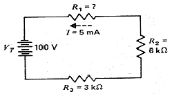
- 7kΩ
- 9kΩ
- 11kΩ
- 13kΩ
(정답률: 76%)
75. 가솔린 엔진에서 기동 전동기의 소모전류가 90A이고, 배터리 전압이 12V일 때 기동전동기의 마력은 약 얼마인가?
- 0.75PS
- 1.26PS
- 1.47PS
- 1.78PS
(정답률: 66%)
76. 에어컨라인 압력점검에 대한 설명으로 틀린 것은?
- 시험기 게이지에는 저압, 고압, 충전 및 배출의 3개 호스가 있다.
- 에어컨라인 압력은 저압 및 고압이 있다.
- 에어컨라인 압력 측정시 시험기 게이지 저압과 고압 핸들 밸브를 완전히 연다.
- 엔진시동을 걸어 에어컨압력을 점검한다.
(정답률: 72%)
77. 기전력이 2.8V, 내부저항이 0.15Ω인 전지 33개를 직렬로 접속할 때 1Ω의 저항에 흐르는 전류는 약 얼마인가?
- 12.1A
- 13.2A
- 15.5A
- 16.2A
(정답률: 48%)
78. 전조등 장치에 관련된 내용으로 맞는 것은?
- 전조등을 측정할 때 전조등과 시험기의 거리는 반드시 15m를 유지해야 한다.
- 실드빔 전조등은 렌즈를 교환할 수 있는 구조로 되어 있다.
- 실드빔 전조등 형식은 내부에 불활성 가스가 봉입 되어 있다.
- 전조등 회로는 좌우로 직렬연결 되어 있다.
(정답률: 72%)
79. 스테이터 코일의 접속 방식 중의 하나로 각 코일의 끝을 차례로 접속하여 둥글게 하고, 각 코일의 접속점에서 하나씩 끌어낸 방식의 결선은?
- 델타 결선
- Y 결선
- 이중 결선
- 독립 결선
(정답률: 60%)
80. 12V를 사용하는 자동차의 점화코일에 흐르는 전류가 0.01초 동안에 50A 변화하였다. 자기인덕턴스가 0.5H일 때 코일에 유도되는 기전력은 얼마인가?
- 6V
- 104V
- 2500V
- 60000V
(정답률: 67%)